SuperVoxel
 |
|---|
| Voxel scene generated with MagikaVoxel |
This work is the result of my bachelor project and is about physics simulation applied to the video games field. The structure of this lecture will be as followed. First, there will be an introduction to the concepts and contexts related to this project with an overview of our approach. Secondly, we will expose the technical background that was required for the project. Thirdly, we will expose our method in a fined-grained manner. Fourthly, we will show some results that highlight interesting facts. Finally, we will briefly conclude and there will be an additional and optional section "Why this project". We will also let all the examples harvested during our work.
1. Introduction
In this section, we will describe the problem we aimed to solve. We will also introduce the reader to the context and concepts related to physics simulations in video games. Finally, we will expose an overview of our method and show some of our contributions.
In this part, we will introduce the reader to the challenges emerging from physics simulations in video games. Indeed, a video games is a real time and interactive application. The user's actions have direct results in the digital world and this is a computational challenge, especially within the physics simulation field. Indeed, the question is : How do we keep an application interactive while still exposing a pleasuring amount of details when breaking an object ? This question of realism looks still wide open and is intricately related to the pleasure and the amazement of the player. We do not only stare at a technical achievement anymore, we are also contemplating a piece of art.
Therefore, our wish in this project is to design a detailed and realist simulation. In fact, When you imagine a bridge collapsing, the following questions raise : How do you represent the data for such a simulation ? What are the common practices already in used ? Indeed, we won't reinvent the wheel and things already exist. Usually, there is two schools when it comes to simulating solid body physics : Mathematical simulation and Heuristics. Sometimes, we want to use them both as the same time. Indeed, the "ground truth" simulation is giving us the best details but often lead us to a non-interactive behavior because of the heavy computations. On the other hand, the heuristics is our best bet regarding the speed but often suffers a lack of realism. Now that we have introduced you to the simulation type. What kind of data should you use for such simulation ? In our project, we decided to use Voxels. We will describe what them more in the Technical Background section. For now, a Voxel is to a volume what a pixel is to an image. Namely, it is a spacial piece of data often represented with a color. Voxels are good because they allows us to represent arbitrary shapes. As you can see on the image bellow, they already have been used in some games like Teardown.
| 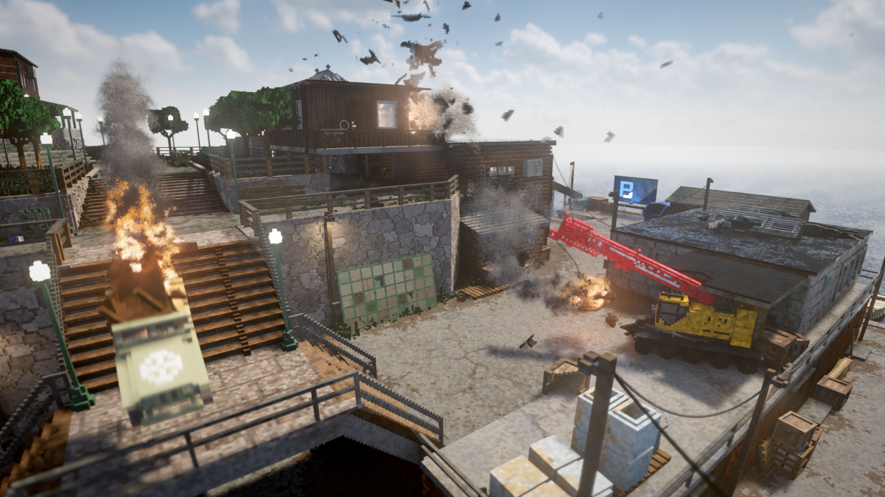 |
|---|
| Teardown screen shot from the official website |
Teardown is using heuristics to simulate the physics for most of its assets. In a nutshell, when a force with high magnitude is applied to an object, it gets detached. Now, despite this inspirational game, we want to try more realistic cracks. This is why this project uses a mathematical simulation paired with heuristics.
We will now proceed to an overview of our approach. Indeed, our goal through this project is to compare two cracking methods. Both methods are using a linear elasticity simulation (more about this in the tech section). The first method is using only a mathematical simulation in an iterative manner. The second method is based on heuristics. We will also compare the cracks obtained from different mesh types. Indeed, to proceed to the simulation, we need to feed the solver with a volumetric mesh. The idea is the same as a surface mesh but it express a volume in addition to a surface by dividing the volume into smaller elements. When giving an input mesh to the linear elasticity solver, it computes the stresses inside the objects. This allows us to to decide where the crack should happen based on the method used. It is worth to note that we will also describe the process of transforming a Voxel model to a tetrahedral mesh. Now that we have introduced the reader to the content of our project, we will move on to a intermediate conclusion exposing our contributions.
We will now conclude this introduction section by highlighting our achieved contributions. The first contribution is our crack comparison between our two methods, namely the ground truth method and the heuristics based method. Indeed, through these experiments, we are comparing the aestetics and the details of these cracks. Moreover, we are comparing the cracks along object through two different mesh types. The first type is the Voxel like tetrahedral mesh and the second is the Delauney mesh type. In addition, we will provide two more algorithms. The first is meant to generate a tetrahedral Voxel mesh from a Voxel model. The second is used to represent a graph data structure of the tetrahedral mesh. Now, we will expose the papers and the Math material on which we based ourselves for this project.
2. Technical Background
We will first present the articles that were used in this project and at the same time explain the technical terms. Then, we will talk specifically about the material we used. Therefore, this section is divided in two parts. The first is about physics simulation and the high level Math behind it. The second is about explaining what are Voxels.
2.1 Physics simulation
The first article is O'Brien et al. 99 and is about computing and animating Brittle material fractures. They use a linear elasticity simulation over tetrahedral meshes. Linear elasticity is a model that describe how a solid is internally stressed when it is being deformed by some forces that are applied to it. Here, "Linear" means that there is a linear relationship between the stress and the strain. The stress is the internal forces applied to the object and the strain is the deformation of the object. In our case, the linear relation imply that the stress is directly proportional to the strain and hence the following holds.
Where and are respectively the stress and the strain of the object. The proportionality constant is the modulus of elasticity and measure the resistance of an object to being deformed. This equation an expression of the Hook's Law. The stress can be defined as the force divided by a cross section of the object , therefore the force per unit area. The strain is expressed as the variation in length of the object divided by the original length .
| 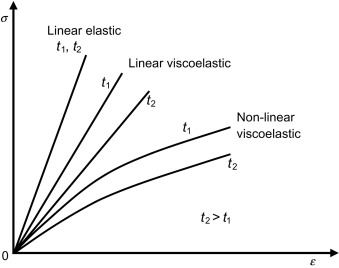 |
|---|
| stress-strain relation for different material types |
This stress-strain graph illustrates well the difference in relations among different elastics materials. In this project, we will restrict ourselves to the "elastic" ones. It is worth to note that if the strain becomes to high, we will reach the fracture point of the object and it will break.
Now that we know a bit more, we said before that O'Brien et al. were running the linear elasticity simulation over tetrahedral meshes. Indeed, in order to proceed to a structural analysis, they perform the linear elasticity simulation with the help of the Finite Element method. In fact, we need a discretization of the object for the computer to proceed to the simulation since it cannot solve continuous problems. The goal of FEM is to obtain a volume mesh from a surface mesh. To do this we "fill" the enclosing volume or area of the surface mesh with smaller geometrical shapes. This can be done either in 2D or 3D. In 2D, we fill the domain with triangles or squares. In 3D, we fill the volume with tetrahedrons or hexahedrons. To get the right picture, imagine re-building a real life object with Lego blocks in order to mimic its atom like structure in a very coarse manner.
At this point, following O'Brien et al, we have a simulation and a mesh, but what is the output ? The linear elasticity simulation allows us to compute per tetrahedrons stress tensors. A stress tensor is often refereed as a matrix:
This matrix is containing the stress components . As we can see in the picture bellow, we have an orthogonal basis and for each surface we have a traction vector . This set of traction vectors are each representing the force per unit area that should be applied in its respective direction to the object in order to maintain its equilibrium state. Therefore, the higher the stress on the object in some direction, the higher the magnitude of its respective traction vector will be. Each traction vector is expressed as followed in this example :
As we can see, there is a relationship between the traction vectors and the stress components. But what interest us the most now is the eigenvalues and vectors of .
| 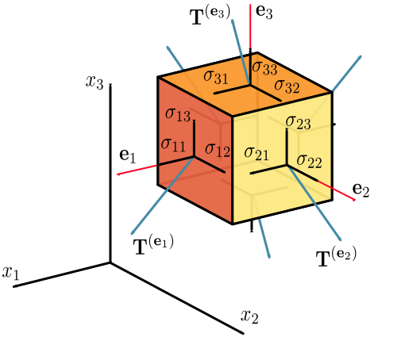 |
|---|
| Visualization of the stress components in the stress tensor and the tractions vectors |
Indeed, O'Brien et al. proposed to find the maximum tensile stresses in the object. This can be done by finding the tetrahedrons with the maximum eigenvalues. Then the fracture plan is computed as in the direction with the greatest stress. This is equivalent in finding the eigenvector relative to the maximum eigenvalue of the tensor. Formally, we can extract the following from .
Hence, in overall, the O'Brien et al. propose to run a linear elasticity simulation over a tetrahedral mesh for each time step of the simulation. At each iteration they find the stress tensors, eigenvalues and eigenvectors for each tetrahedron. They then find the tetrahedrons with the maximum eigenvalue and find the corresponding eigenvector which become the fracture plan. Finally, they split the mesh elements across this plane. This is worth noting that the article used a "separation tensor" but for simplicity and because it does not make a huge difference, we described their work using a stress tensor. The reason we described O'Brien et al. in a precise manner is because their work was a basis for us and the other articles which we are going to present now.
Indeed, The next article that we will talk about is Muller et al. 01. The idea is similar as in O'Brien and al. but instead of running a full linear elasticity simulation at each time step, they run a rigid body simulation between the collision. On such an event, they retrieve the force applied to the objects and run a linear elasticity simulation to find the stresses and the fracture plane. This is much quicker with the trade-off that the objects are rigid within the collision.
The third and last article that we want to present for this project is named Parker et al. 09. This paper is using the same idea as from O'Brien et al. but the tetrahedral meshes are much coarser. In fact, they are using surface meshes models with high triangle counts for the rendering and they are using coarse tetrahedral meshes for the simulation. They then express the vertices positions of the high resolution mesh as a linear combination of the the vertices positions of the coarse mesh. Moreover, this paper also describe some techniques to "hide" the bad looking fracture due to the coarse mesh. They are calling this "splinters". The idea is to add geometrical details in the fine-grained mesh where it broke. This gives the fracture a detailed look even if the tetrahedral mesh was coarse. Now that we have reviewed the functioning of the physical simulations we used, we will cover in more detail what are Voxels and how we generate our meshes.
2.2 Voxels
In this section, I want to briefly discuss some basis of our project : Voxels models and meshes. Indeed, we began our journey with Voxels. But what are they exactly ? In fact, you can decompress the word "Voxel" as "volume" and "element". More precisely, a Voxel is the same as a pixel but in a 3D space. They have interesting properties as you can represent a 3D object made from Voxels with a 3D matrix and a pallet of colors. Each non-zero element in the matrix indicate the presence of a Voxel. The color of the Voxel is determined as the index stored in the matrix for this element. Beyond the unique ascetic of Voxels, they can facilitate the use of raymarching or raytracing with the right data structure to hold them. We will not cover this subject as it is out of bounds of this project. Note aside, from the year 2011 with Minecraft to now on with Teardown, Voxels are seducing more and more developers and gamer, allowing the discovery of new game designs and visuals. However, in this project, for technical reason, we decided to represent our Voxels with tetrahedrons for the simulation and not hexaedrons which are cubes. You can observe how the 5 tetrahedrons making a cube are placed in the space.
| 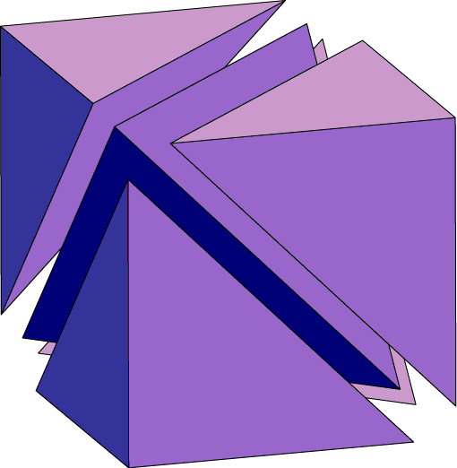 |
|---|
| Five tetrahedrons making a cube |
We will explain our algorithm to generate Voxel-like tetrahedral meshes in the "3. Method" section. Basically, for each Voxel in our model, we will stack up 5 tetrahedrons. This will allow us to keep the Voxel-like shape while getting a tetrahedral mesh of our model. We also need to note that we used an algorithm called Delauney Triangulation in order to generate 3D tetrahedral meshes, namely our other mesh type. Indeed, the the Delauney Triangulation is one of the most spread method to generate volumetric meshes. The algorithm works as follow (in 2D): Given, a set of points and its triangulation. is such that no points of lies inside the inscribed circle of any triangle from .
| 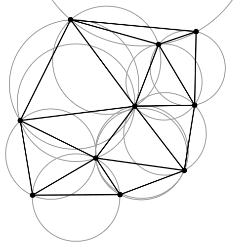 |
|---|
| Convex shape triangulated with Delauney Algorithm |
We can expand this reasoning to 3D by using a sphere. Some clever implementations of this algorithm can reach a runtime of .
Now that we have exposes details about Voxels and meshes, this discussion on the technical background reaches its end.We are now going to tell the journey of the project and show our contributions
3. Method
In this section we will describe the steps that were taken from the beginning of the project until the end. This section is divided in two subsections. The first is delighted to expose how we visualize the data of the simulation and how we generated our meshes. The second subsection is meant to show our cracking method. Through this whole section, we will highlight our contributions as well as describe some important steps taken.
3.1 Visualizing the data and meshing
In this subsection, we will expose our work that allowed us to visualize the data and we will also show how we meshed the Voxel models.
Everything began in early September. We needed software to design voxels models and a python library that allows to display the model in a python notebook. We found Goxel and MagikaVoxel were good to make voxel models and ipyvolume seemed a good choice to display 3D plots. Here is a result of a voxel model visualized.
| 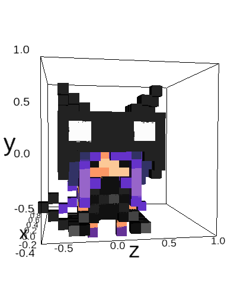 |
|---|
| Cat voxel model |
After that we contacted Julian Panetta and he gave us some useful knowledge about physics simulations. This knowledge has already been described in the technical section. The process of reading the articles taught us the basics of physics simulation, all the relevant terms related and allowed us to make a plan for the project. Indeed we decided to go with a linear elasticity simulation on hexahedral (cubes) meshes.
The next step was then to find a library that performs the simulation with FEM. We found three candidates. The first one was Sfepy. It was easy to run but very complicated to understand how to apply the forces as you needed to specify the equations to compute the stresses. The second was Libmesh. It seemed very complete but very complex and was not having python bindings alive. Finally, we saw MeshFEM from Julian Panetta. It was Very good because of its simplicity but the python bindings were in a preliminary state. The biggest drawback was certainly that it could only do tetrahedrons. Nevertheless, We still decided to use this library as it seemed easy to understand.
Now that we had a working library, we needed to feed it with our own Voxel examples. The problem is that we needed to convert our Voxel models into tetrahedral meshes (hexaedrons were not available on MeshFEM). As described in the technical section, a cube is made of 5 tetrahedrons and you can observe our Voxel chair model bellow. It was triangulated with our method.
| 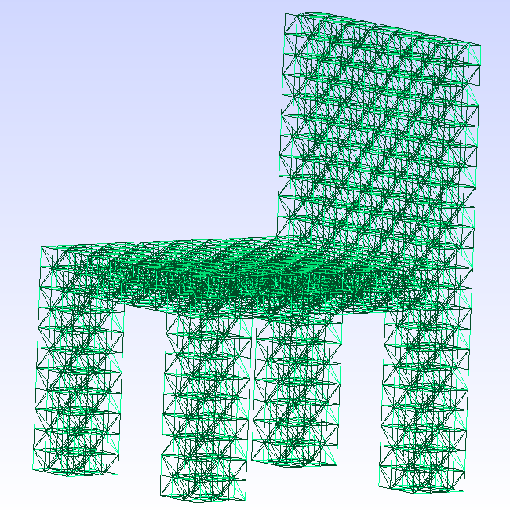 |
|---|
| Five tetrahedrons making a cube |
Indeed, we came up with an algorithm that we designed ourselves and which is one of our contribution. In fact, we designed it ourselves because it was important for us to understand how the mesh were created. Here is the pseudo code.
- Given a 3D integer matrix M
- Given the discrete space P of points (x, y, z) in (M[0], M[0][0], M[0][0][0])
- Given V, T the set of vertices and tetrahedrons respectively
- Given counter = 0 and DuplicateMap{}
For each (x, y, z) in P
if M[x][y][z] == 0 continue
v1, ..., v8 = UnitCubeVertices(x, y, z)
indices, verticesFiltered = GetTetrahedronIndices(v1, ..., v8, counter)
T.add(indices)
V.add(verticesFiltered)
GetTetrahedronIndices(vertices, counter):
indices = [], filteredVertices = []
for each vertex in vertices
if v in DuplicateMap => indices += DuplicateMap[v]
else => indices += counter++ ; filteredVertices += v
return indices, filteredVertices
It is worth to note that the previous algorithm is an interesting experiment to represent Voxels as tetrahedral meshes. Firstly because it gives an interesting look to the mesh. Secondly, our algorithm is just "stacking" tetrahedrons in the space and thus runs in linear time of Voxels as opposed to Delauny which is ( being the number of points to link). Finally, and we will show this in the results, it can give a pleasing look to the crack of the object. Now, let's get back to visualizing the meshes.
To continue our visualizing journey, we then exported the resulting vertices and tetrahedrons to the MEDIT mesh format. In order to visualize our meshes, we used GMSH. We discovered this software with MeshFEM. Here are two pictures of some of our models visualized with GMSH.
| Chair tetrahedral mesh |
| 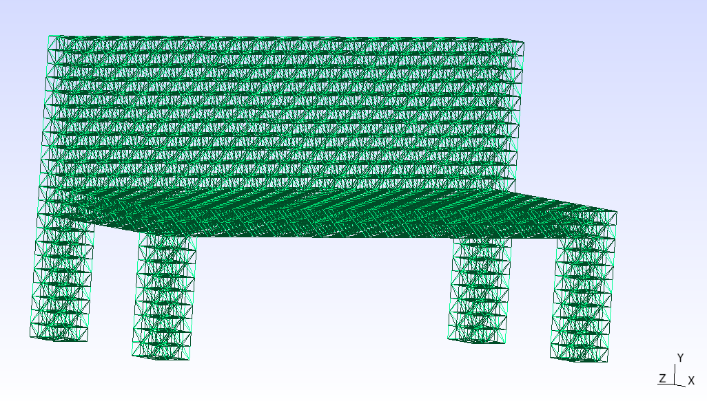 |
|---|
| Bank tetrahedral mesh |
From there we ran the simulation on examples and tried to understand its outcome. MeshFEM's most interesting outputs are the displacement field and per-element stress tensors. The displacement field is a vector field that express how much each vertex has moved when the loads where applied to the object. The stress tensors are as described in the technical section. Moreover the library outputs files in MSH format. We used MeshIO in order to read the content this MSH file but we still needed to visualize the result. We considered two libraries for this task. Matplotlib and later ipyvolume. The journey with Matplotlib was painful and never worked, it couldn't do animated plots and cannot display clearly the 3D data that we needed. Things worked way better with ipyvolume. We could display the object with its displacement field of the object. Here is an example.
| 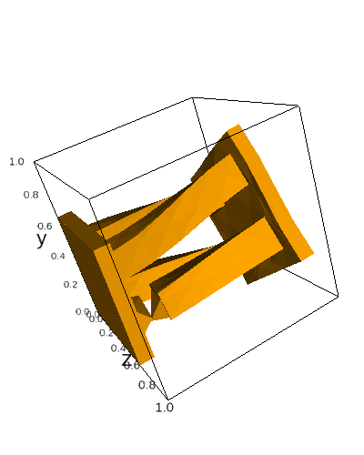 |
|---|
| Object deformed by twisting rendered with ipyvolume |
After that, we needed to compute the stress inside the object as stated in the technical section. We used numpy to extract the eigenvalues and eigenvectors of each element from the output of the simulation. We then kept the eigenvector with the highest related eigenvalue. This gives us a vector field of the stress inside the object and we can thus visualize it.
| 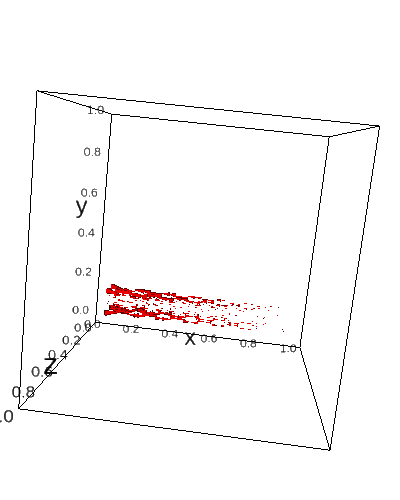 |
|---|
| eigenvector field related to the highest eigenvalue |
We can see how the stress "flows" into the object and the magnitude of the vectors indicate the amount of stress where the given vector is located. We validate this step of the project by simulating simple forces to simple objects and compared the results with our intuition. Indeed, we were expecting the object to break in the location of its weak spots. Namely, a weak spots is an area of the object sensible to the magnitude and the direction of stress due to its topology. Now that we have seen our methods to visualize the simulation data and how we generate our meshes. We will switch to the sub-section that explain our cracking method.
3.2 Cracking computation
In this subsection, we introduce another contributions. We will firstly introduce our method to represent the mesh as a graph. Secondly, we will expose our two cracking methods which are named as followed
- One by one element crack
- Crack plane heuristic (O'Brien et al. 99)
We will refer to them as Policy 1 & 2 respectively. Now, let's observe the graph conversion algorithm.
3.2.1 Graph representation
In this paragraph, we will describe our method to convert a tetrahedral mesh into a graph. As a motivation, using a graph to filter the tetrahedron comes in a handy when separating the object in pieces when computing the resulting crack after the simulation. This graph builds a map of adjacent connections between the elements. In other words, every tetrahedron of the object is a vertex in G. There exists an edge between two tetrahedron if they are adjacent. Two tetrahedrons are adjacent if and only if they share three vertices. Two tetrahedrons share three vertices if and only if they share a face. Here is the algorithm to build the connectivity graph.
Given the elements list L=[e1,...,en] st ei=[i0, i2, i3, i4] i's are integers (Nx4)
Given G=(V, E) initially empty
Given K = [] the list of faces indices and index of element ((N*4)x4)
for each ei in L
find D the the list of four distincts vertices sequence for each face of ei
D = [f0, f1, f2, f4] where fi = [j0, j1, j2] and ji's are an integers
For each fi in D
K += [fi, indexOf(ei)]
Sort K[:,:3] from left to right in axis 1
Sort K[:, 3] on axis 0
V = [1,...,L.length]
for i=0 to K.length-1
if K[i][3] == K[i + 1][3] then E += (K[i][3], K[i + 1][3])
return G
This algorithm represent a part of our contribution. Indeed, it seemed very convenient to represent partial volume with a graph because it allowed us to propagate a crack from its origin point very easily.
3.2.2 One by one (Policy 1)
In this paragraph, we will describe our first cracking method. The one by one crack policy is the following. We compute the stress of an object iteratively. At each iteration we remove the element that undergoes the heaviest stress (the one with the greatest eigenvalue) until the object is broken in two pieces. Our intuition was that the crack of an object begin at some weak spot and continue in an orthogonal fashion to the stresses located at this weak spot. Which, we think is approximated by removing the most stressed tetrahedron iteratively. Here is the high level of the algorithm.
For each iteration until max_it
1. Run the simulation on the object
2. Retrieve the eigenvalues
3. Process G, the graph of connected elements
4. Remove in G the element corresponding to the highest eigenvalue
5. update the elements of the object from G
6. if ConnectedComponents(G) > 1 return the object
This method is another part of our contribution. Now, we are going to expose our second method of cracking.
3.2.3 crack plane heuristics (Policy 2)
This last paragraph explains our last cracking method. This second policy is very similar to the one explained in the technical section from O'Brien et al. but still slightly different. The high level of the algorithm goes as followed.
1. Run the simulation on the object
2. Extract eigenvalues and eigenvectors
3. Find the element with max eigenvalue
4. Find G, the connectivity graph
5. Remove all tetrahedrons along a plane orhtogonal to the associated eigenvector
This algorithm is part of our contribution. Moreover, it is worth to note that our method diverges from O'Brien et al. in the sense that we do not just separate the faces of the tetrahedrons. Indeed, we delete the tetrahedrons along the plane. This produce a slight difference in the visual of the object after the break. Moreover, we proceed to a DFS on the connectivity graph originating from the most stressed. For each encountered element we check the sign of the distances between the vertices of the element and the plane. If the distances do have different signs, they are on the plane and we recurse. If the distances do all have same sign we stop the recursion. It is worth to note that the connectivity graph was obtained in the same way as described in the one by one crack policy. Now that we have seen this last policy, this paragraph comes to an end and we are going to close this whole section.
We indeed reached the end of the section detailing our methods and contributions. The latter contain the Voxel mesh conversion, the tetrahedral graph representation, our two cracking method and our experiment of comparing the cracks while using different mesh types. To continue our journey through this project, we will now explore our example section.
4. Results
In this section we will compare and qualify our examples resulting from our experiments. In a first manner we will compare our cracking strategies. In a second manner, we will compare our different meshes divisions strategies. Finally, in a last manner, we will make a small conclusion.
For some example, you will find an interactive plot to observe the result. You can manipulate the plot with the mouse to see the object crack. We chose to use interactive plots because it was hard to get a single picture exposing the full properties of each crack. When you'll open each new tab you'll find three or four plots that we will describe here briefly.
| 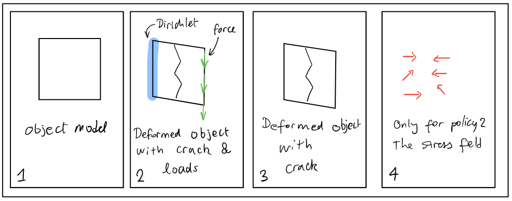 |
|---|
| Example of an interactive plot |
Now, let's dive in each of our comparison sub-section, beginning with our two cracking methods.
4.1 Comparison of our cracking methods
In this first subsection we will compare our cracking method with two examples under two criterion : How pleasing is the crack to look at and how it follows our intuition. For each example we will perform a general appreciation of both methods and then we will judge individually both methods. Finally, for each example we'll conclude by summing up our observations regarding both policies and we'll try to pull out interesting facts. Let's look at the first example.
4.1.1 The Arch
The first example is a bridge made of Voxels. As you can observe in the interactive plots bellow, the force is applied on the middle section and directed toward the negatives Y. This example is interesting because it is intuitive. Indeed, we all know the curved effect of a bridge that spread the stresses along its curve. And therefore we can reason about the correctness of the simulation.
4.1.1.2 Policy 1
As we can see on the plot, the object barely deforms and stays in shape. The crack looks bad in the sens that it is straight like a line. Indeed, the crack does not look very detailed. As looking at the rightmost plot, the deformation does not look very realistic either. Nevertheless, the crack position is following our intuition. Moreover, as we can see on the image bellow, the crack also expanded in the bottom of the arch. This is interesting as it shows how the crack can spread.
| 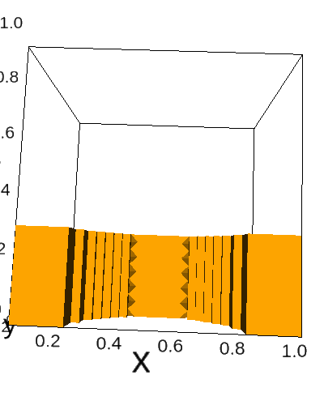 |
|---|
| Arch model that looses some tetrahedrons at the bottom |
This matches our intuition that weak points trend to appear in areas with orthogonal angles. Now, let's observe the second policy for the same example.
4.1.1.2 Policy 2
As we can see on the third plot, the crack happened in the middle of the object. It has the default to be a bit too straight but as we can see, the object did not broke in a full regular manner which is pleasant to see. This slight irregularity is due to the highest eigenvector not aligned with the structure of the object. Moreover, the crack also follow our intuition. We can observe on the last plot and on the image bellow that the stress of the object really spread along the curve. We can even observe that the flux of the stress is converging to the top of the bridge where it sort of rotate around the crack point. This is worth to notice because it validate our intuition about this model. |
|---|
| Eigenvector field illustrating the direction of the stress inside the model |
Now that we have described the second crack policy, let's do a brief intermediate conclusion.
4.1.1.3 Policy 1 vs 2
To conclude intermediately, as we have observed, the policies produced slightly different cracks but in the same locations. Both cracks did not look very appealing but they both followed our physical intuition. Nevertheless, the policy 1 showed that the breaking can be far away from the main crack as opposed to policy 2. Indeed, in the second policy the crack was very confined and not very sparse. Let's now observe the next example.
4.1.2 The Bank
This next example is a bank and the applied force is as if someone too heavy would have sit on it. This model is of interest because it has four legs, each representing a potential weak point located near the plane of the bank. Therefore we expect this object to break at one of the leg. Let's have a look at the first policy.
4.1.2.1 Policy 1
As we can see on the first plot and on the image bellow, the crack happened at the left front leg of the bank.
| 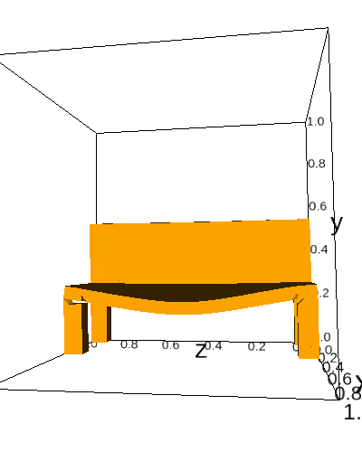 |
|---|
| Bank crack policy 1 |
The crack looks okay but not pleasing. We can see some details around the left leg that broke. Nevertheless, it is not to much exiting to look. Moreover, the crack is following our expectation of breaking at one of the legs and we can note that the right front leg was damaged at the same location as the left one. We can definitely imagine that the person sitting on the bank would fall toward the front direction and this validate our intuition. Now, let's observe the next policy.
4.1.2.2 Policy 2
As we can see on the plot and on the image bellow, the cracks looks very pleasing. The crack location is certainly located at the left front leg but the orientation of the maximum eigenvector was certainly horizontal. Therefore, the cracking plane destroyed the whole object.
| 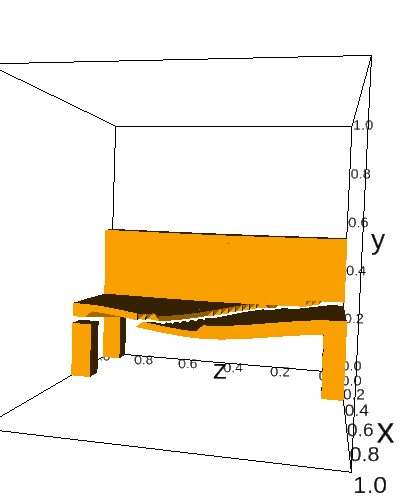 |
|---|
| Bank crack policy 2 |
This is very pleasing to watch because there is a lots of details. However, if we take a closer look at the image above, we can see that the bank detached from the right side to the middle. This does not match our intuition. To persuade ourselves, we can even have a look at the fourth plot and observe that the stress is located in 6 different clusters. But there is not a great coherence with the break. Let's now conclude this example with a few words regarding the oppositions between the two policies.
4.1.2.3 Policy 1 vs 2
To briefly and locally conclude, the two policies gave quite asymmetric results. Indeed, the policy 1 did not look very pleasing but seemed to match our physical expectation. As opposed to the first policy, the second was very pleasant to watch but the intuition behind the break seemed wrong. In order to conclude our crack comparison, we need to make an analysis of our examples in order to pull out interesting facts. Therefore, let's consider the following analysis and conclusion for our examples.
4.1.3 Crack methods analysis and conclusion
In overall, our two policies gave similar results with the arch but asymmetric results with the bank. The first policy trend to have a better physical correctness than the second one. Nevertheless, the latter seemed to give better looking cracks. In fact, we think that both method will differs depending on the topology of the object and where the force is applied. Indeed, the policy 1 is quite adaptive since it removes tetrahedrons one by one. In opposition, the second policy is way more rigid as it split the object through a plane. The crack can loose its physical meaning if the plane is separates the objects through its whole length as for the bank. Despite this fact, the cracks still looks better with the policy 2. If we were to choose one in a video game, we would go for the policy 2. Indeed, the experience of most players does depends more on the beauty of the assets rather than its physical correctness. If we look at Teardown, this game looks very pleasing but its physics are not very accurate. This really illustrates our point.
Our discussion about cracking method now comes to an end. Indeed, we have finished our comparisons, we will now switch to our two mesh divisions section.
4.2 Comparison of mesh divisions
In this subsection, we'll compare our mesh division techniques. As a reminder, we have two types of meshes. The first type are the Voxels meshes that are part of our contribution and the second type are the Delauney meshes. We will compare the cracks within the two meshes types by looking at the heuristics crack method. This way, we'll have a straight crack that will be easy to qualify. Moreover, for each examples, we added an image highlighting the crack. Finally, we will compare theses different meshes by a subjective criteria : How beautiful do the crack look. By the beauty, we intend to describe a crack that is pleasing to see. Now, let's jump in the first example which is a chair.
4.2.1 The Chair
This first example is a chair where, as you can see on the above plots, the force is applied as if someone had relaxed too much on the back of the chair. In other words, the force is applied on the back of the object and oriented toward the negatives X. Let's compare the cracks.
4.2.1.1 Voxel mesh
| 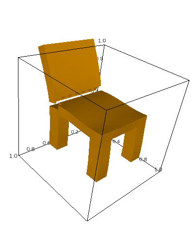 |
|---|
| Chair model with our Voxel triangulation |
4.2.1.2 Delauney mesh
| 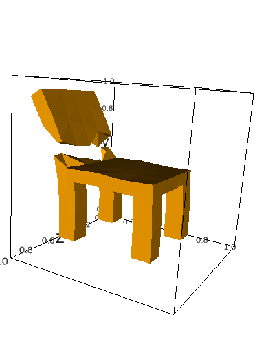 |
|---|
| Chair model with the Delauney triangulation |
4.2.1.3 Comparison
The first thing that comes to our mind by looking at the crack "line" is the difference in details and the irregularity of the cracks. The Voxel crack is more detailed and is very structured. In opposition, the Delauney mesh is very coarsed and irregular. Indeed, both examples are very asymetric. Our personnal opinion is that the Delauney mesh crack looks better. This is due to this coarse irregularity which is pleasing to look at. Now, let's observe the next example.
4.2.2 The Horizontal tower
This next example is a tower. As you can observe on the plots and images bellow, we fixed the tower at the far left and we twisted the part at the far right. In other words, both forces are applied and in different directions in order to make the object rotate a bit along the X axis. The resulting effect is that the structure broke at its weakest point near the far left. Let's compare the aestetics.
4.2.2.1 Voxel mesh
| 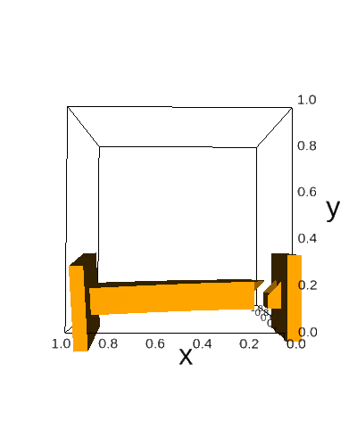 |
|---|
| Tower model with our Voxel triangulation |
4.2.2.2 Delauney mesh
| 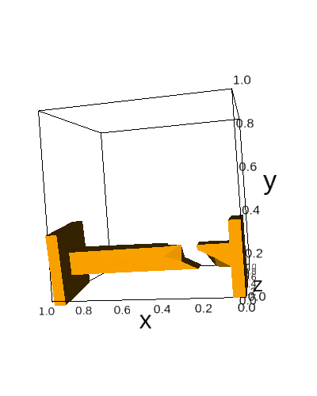 |
|---|
| Tower model with the Delauney triangulation |
4.2.2.3 Comparison
As we can observe on the plots and the images, both cracks happened around the same place of the tower. Our Voxel mesh crack is very straight and does not look very realist. But it has its charm. The crack is not very detailed and is regular. The fracture is also very local and does not spread across the object. To abord the Delauney mesh, we can see that the crack occured at a slightly higher X position than for our Voxel mesh. Moreover, the crack is more sparsed across the X axis. In addition, We can also observe an higher amount of detail around the separation location. Finally, we can see that the crack is not orhtogonal to the horizon for both objects. In our opinion, the Delauney mesh looks more pleasing even if our Voxel mesh crack has a certain amount of charm. Now, we will do a conclusion of our comparisions and try to pull out interesting facts.
4.2.3 Analysis and Conclusion
Finally, in order to conclude our eastetics comparision, we have contemplated both our Voxel meshes and the Delauney meshes cracks. We could see a trend for our Voxel mesh to be very straight, regular and very local to the weak point. As opposed to that, the Delauney meshes were coarser, irregular and more sparse across the object. We think that for a crack to be pleasant to watch, there must be the presence of irregularity both in the location of the crack and in the separation area. In our opinion, this irregularity is pleasant to contemplate because it surpises the reader. We think this little amazement is at the origin of the beauty of destructible objects. Now that we have finished to look at our different meshes, we are going to conclude our work.
4.3 Conclusion about our examples
In this last time, we conclude our work and analysis. We have compared our both crack methods and our both meshes types. Regarding the crack policies, we have observed that the heursitics seemed to have a better look but was sometimes suffering a lack of physical meaning. On the other hand, the one by one policy was looking okay but it was not exiting. Nevertheless, the policy 1 always matched our physical intuition. In order to continue our conclusion, we want to talk about the two meshes divisions strategies. Indeed, we have compared our Voxel meshes triangluation with the Delauney mesh triangulation. We saw that our Voxel triangulation makes regular, local and not detailed cracks. On the other hand, we saw that the Delauney was quite the opposite with sparse cracks and more irrgularity.
In overall, we think that for the cracks method the beauty of the fracture depend a lot on the object topology and where the forces are applied. We would prefere the heuristics based method as it gave better looking results. For the mesh division part, we would prefer the disordered results because they were more pleasing. These kind of results were achieved with coarse Delauney meshes.
Finally, in a video game context, we could definitly prefer to use the heuristics with Delauney meshes. Indeed, the better looking results were obtained with this combination. Nevertheless, our Voxel meshes gave quite a unique look and are unusual which is worth to note before we put an end to this paragraph. Indeed, this section exposing about our results is now finished and we will direct ourselves toward the final conclusion.
4. Conclusion and Final words
Finally, in this last section, we will conclude our work. In a first time, we will sum up our contributions and and in a second time we will proceed to talk about some potential futur work.
Our contributions were made of algorithms and experiments. We proposed an algorithm to generate tetrahedral meshes with a Voxel look. We also proposed an algorithm to represent efficiently tetrahedral mesh as a graph data structures. On the experiments side, we compared two methods for cracks computation, the first one was physically accurate and the second was based on heuristics. We also compared, through the heuristic based method, two mesh division methods. The first division was our own Voxel division and the second one was the Delauney triangulation. Now that we have reminded the reader of our contribution, we will explain potential futur work.
Indeed, our initial goal when starting the project was to implement a real time simulation. This would be very interesting to create as it would allow us to explore objects destruction in an interactive manner. We would implement the heuristics based method with Delauney meshes as it seemed more suitable for a real-time application. Moreover, it would be interesting to customize the heuristics policy in the following manner. We could use noise to deform the cracking plane and remove this effect of "straight division" that we could observe on some objects. In other words, we could guess the orientation of the plane for some object cracks and this removed a part of the magic behind the simulation. In order to counter this effect, we could use 2D Perlin noise values as an offset to select which tetrahedrons to remove when the object would crack. These extentions would be very interesting to implements. However, this reports is comming to its end.
Indeed, in order to fully conclude this project, I would like to thanks Krzysztof who accepted to supervise this project. His help was precious and much appreciated. He helped me select the path I took for this project and this was very helpful. I aslo wanted to thanks Julian Panetta who gave us some very useful papers to read.